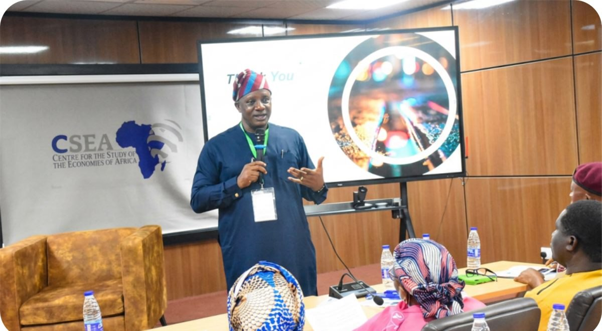
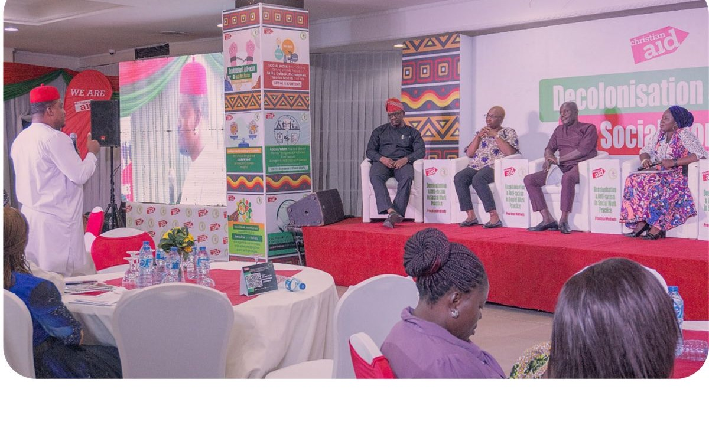
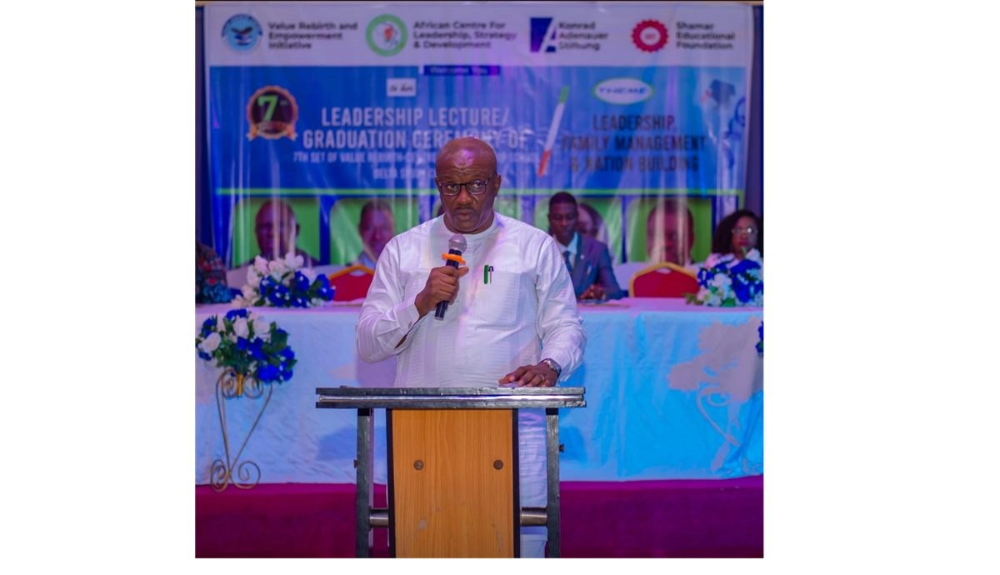

Capacity Building
Building the Next Generation of African Disaster Leaders
How ACDRM's training philosophy develops professionals who lead and reform the systems that govern disaster risk.
2026Read
News, analysis, and insight on disaster risk governance, resilience, and humanitarian leadership across Africa.

ACDRM's proprietary Governance-Interoperability-Ethics framework reframes disaster risk as an institutional challenge, and offers a practical roadmap for reform across the continent.
Read Article
How ACDRM's training philosophy develops professionals who lead and reform the systems that govern disaster risk.

Inside the strategic overview delivered to agency leadership, and what a national plan means for disaster governance.

Institutional collaboration and publications that translate evidence into disaster risk policy.

Integrating climate risk into development planning, infrastructure, and community programmes.

The Founding Director's keynote on decolonisation frameworks and localised development leadership.

Highlights from the 7th Annual Leadership Lecture & Graduation at the Warri Leadership School.
For developers: these articles are placeholder content. Connect a backend/CMS to render real posts into the featured block and #blog-grid. See the integration comment in this page's source for the expected article data shape and the article.html single-post template.